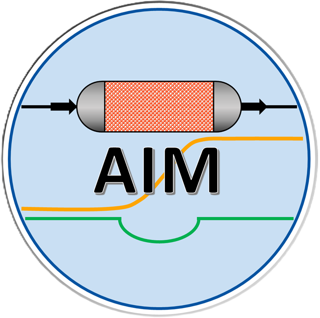

Software & data. 소프트웨어 · 데이터
We develop open materials databases, machine-learning models, and computational workflows that transform quantum and atomistic information into reproducible material, process, and system-level predictions.
양자·원자 수준의 정보를 재현 가능한 소재, 공정과 시스템 수준의 예측으로 전환하는 공개 소재 데이터베이스, 머신러닝 모델과 계산 워크플로를 개발합니다.
{{ sec.title }}

{{ t.name }}
{{ t.kind }}{{ t.desc }}
A fast machine learning model that predicts DFT-quality partial atomic charges (DDEC06, CM5, Bader, and REPEAT) for MOFs and COFs in seconds per structure (vs. hours to days for DFT), with mean absolute errors of ~0.01 e against DFT-derived charges.
{{ pp.title }} · {{ pp.authors }}, {{ pp.journal }}, {{ pp.biblio }}